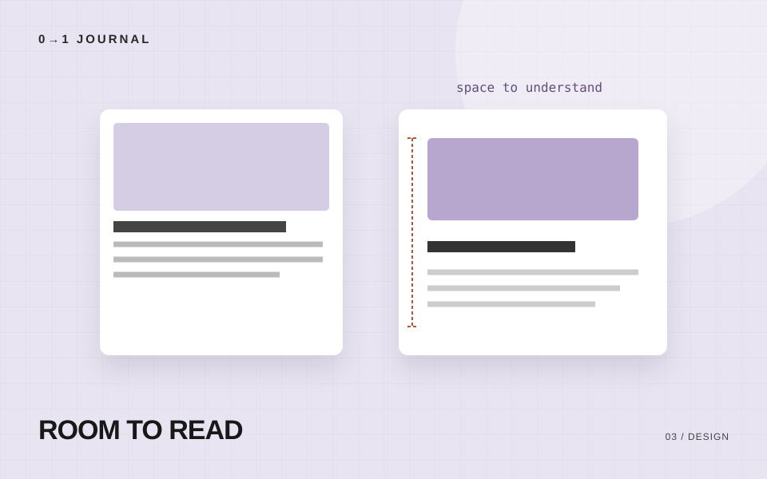

写真の主役が切れたら、表示枠と切り抜き位置を見直そう
横長では見える作品が、縦長のカードで切れてしまう。架空の器の展示案内を題材に、写真全体を見せる場合と枠を埋める場合を分け、object-positionで残す側を調整する手順を紹介します。
#写真 #CSS
CATEGORY / デザイン
デザインについて学べるWeb制作スクール「0→1」の記事一覧。実践的な制作方法やポイントを分かりやすく解説します。
横長では見える作品が、縦長のカードで切れてしまう。架空の器の展示案内を題材に、写真全体を見せる場合と枠を埋める場合を分け、object-positionで残す側を調整する手順を紹介します。

大きな文字を増やしたのに、何から読めばよいか分からない。架空の朗読会の案内を使い、ページ名・節の見出し・本文を三段階で組み、長い文でも読めるか比べる練習です。

同じ「こちら」が並び、どれを押せばよいか分からない案内を見直します。架空の自転車修理店を例に、移動先の内容と次の行動を照らし合わせ、短く具体的なリンク文言を作ります。

同じ予約への入口なのに、ページごとに色や形が違う。架空の貸しスタジオサイトを例に、操作の役割を棚卸しし、共通の見た目と例外を短いルールにまとめます。

色を付ける前に、読者の疑問に沿って情報の順番を決めます。架空の陶芸体験ページを題材に、配置案を2つ作り、選んだ理由を説明する練習です。

文字の大きさや装飾を増やす前に、情報のまとまりを余白で伝える。見出し・本文・カードの間隔を考える練習です。
TRY A LESSON
課題とレビューで学ぶ、
11本の無料レッスン。